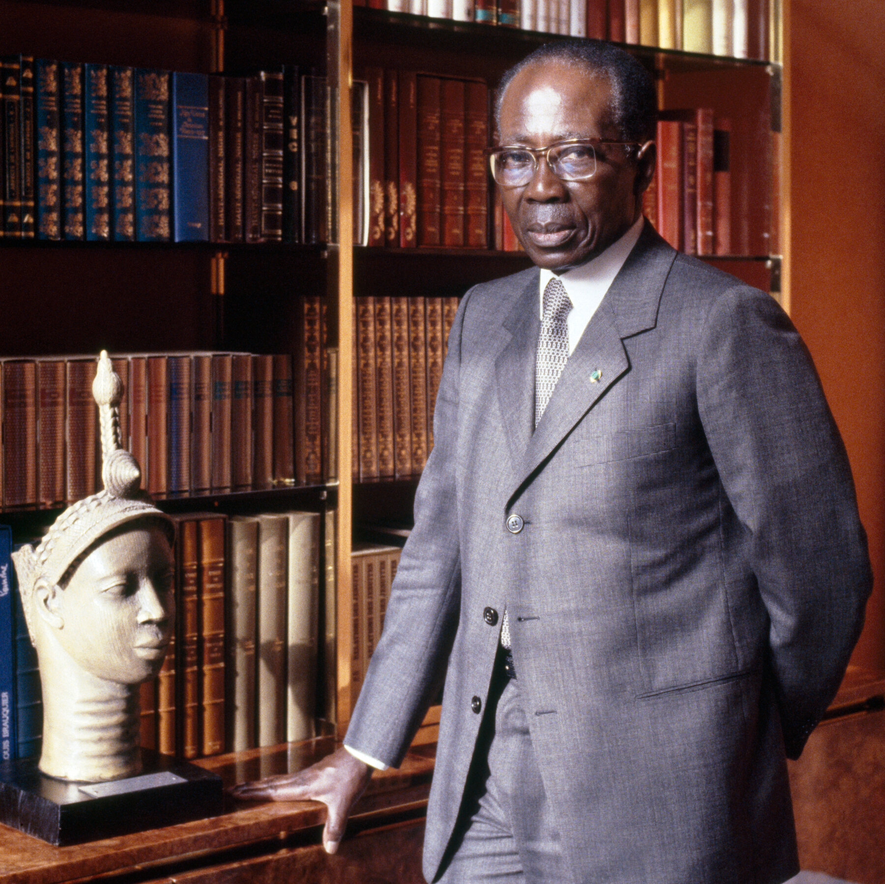

La situation linguistique actuelle
Le choix de Senghor à l'indépendance
À l'indépendance du Sénégal en 1960, le nouveau président Léopold Sédar Senghor doit prendre une décision lourde de conséquences : quelle langue choisir pour l'État ? Le pays compte alors plusieurs dizaines de langues, dont aucune n'est parlée par une majorité absolue. Plutôt que de privilégier une langue africaine au détriment des autres — ce qui aurait pu créer des tensions ethniques — Senghor choisit de maintenir le français comme langue officielle.
Ce choix s'inscrit dans la pensée de Senghor lui-même, poète francophone et théoricien de la Négritude. Pour lui, le français est un héritage qu'il faut s'approprier, non rejeter : « langue de culture » et instrument de modernité, il peut servir l'unité nationale tout en s'enrichissant des apports africains. Senghor pousse même la francophonie à l'échelle internationale, contribuant à la création de l'Organisation internationale de la Francophonie.

Léopold Sédar Senghor en 1987
L'évolution constitutionnelle
La Constitution sénégalaise évolue progressivement. Celle de 1971 inscrit pour la première fois la reconnaissance des langues nationales : six langues — wolof, pulaar, sérère, diola, mandinka et soninké — sont officiellement codifiées. La révision constitutionnelle de 2001 va plus loin : elle reconnaît comme langue nationale « toute autre langue qui sera codifiée », ouvrant la voie à une reconnaissance plus large. Aujourd'hui, vingt-cinq langues sont officiellement reconnues comme langues nationales, même si leur usage administratif reste limité.
La montée du wolof comme lingua franca
Sur le terrain, cependant, la situation linguistique a beaucoup évolué depuis l'indépendance. Le wolof, qui était à l'origine la langue du groupe ethnique wolof installé surtout dans le bassin arachidier et autour de Dakar, est devenu la véritable lingua franca du pays. Plus de 90 % des Sénégalais le comprennent et l'utilisent, même lorsque ce n'est pas leur langue maternelle. Les marchés, les transports, la radio, la télévision, la musique populaire et même une partie de la communication politique se font en wolof.
Les tensions de la « wolofisation »
Cette dynamique a un nom : la « wolofisation ». Elle suscite à la fois fierté et inquiétude. D'un côté, elle marque l'affirmation d'une identité africaine face à la langue coloniale. De l'autre, elle inquiète les locuteurs des autres langues nationales — notamment :
- le pulaar, parlé par les Peuls et les Toucouleurs dans le nord et l'est du pays ;
- le sérère, parlé au centre ;
- le diola, parlé en Casamance, dans le sud ;
- le mandinka et le soninké, présents dans plusieurs régions.
Ces communautés craignent que leurs langues ne soient marginalisées par un wolof devenu hégémonique. Certains intellectuels du Fouta ou de Casamance dénoncent un nouveau colonialisme intérieur, où le wolof remplacerait le français dans le rôle de langue dominante.
La position particulière du français
Le français, dans tout cela, occupe une position particulière. Il reste la langue de l'école, de l'État, des journaux écrits, des examens et de l'enseignement supérieur. Il est associé à la réussite sociale et à l'accès aux carrières administratives. Mais il n'est parlé couramment que par une minorité — environ 25 à 30 % de la population, surtout urbaine et scolarisée. Beaucoup de Sénégalais le comprennent passivement sans se sentir à l'aise pour le parler.
Le fossé entre langue officielle et langue du quotidien
Il existe donc un fossé important entre la langue officielle et la langue du quotidien. À l'école, des enfants qui ne parlent que le wolof, le pulaar ou le diola à la maison doivent apprendre à lire et à écrire dans une langue qu'ils ne pratiquent pas en dehors. Ce décalage est l'une des causes de l'échec scolaire dans certaines régions, et il alimente les débats sur l'introduction des langues nationales dans l'enseignement primaire — une réforme expérimentée à plusieurs reprises mais jamais généralisée.
Le Sénégal contemporain vit donc dans une véritable diglossie complexe : un français institutionnel mais minoritaire, un wolof omniprésent mais contesté, et une mosaïque de langues nationales qui résistent et se transmettent. Cette tension permanente prépare le terrain pour un phénomène inattendu : le retour culturel des langues africaines au sein même du français contemporain.